Menu
Menu
Início
OAT II - Arte Multimédia
OAT II - Escultura
OAT II - Materiais para o Design
OAT II - Pintura
Projeto II - Design de Produto
Projeto II - Design de Interação
Portefólio completo
Outros trabalhos
Arte Multimédia
Oficina de Artes e Tecnologia II
Falar com 2, 4 e 7 pedras na mão.
×